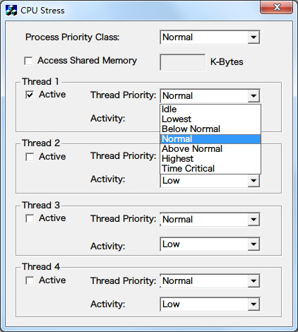
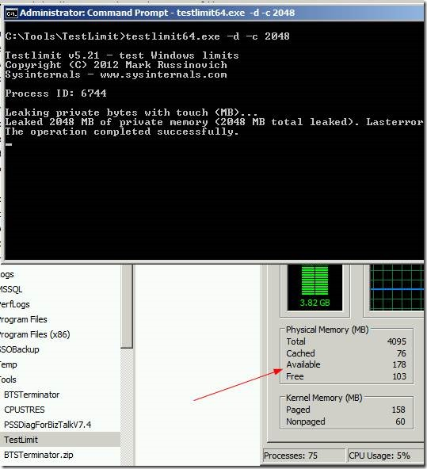
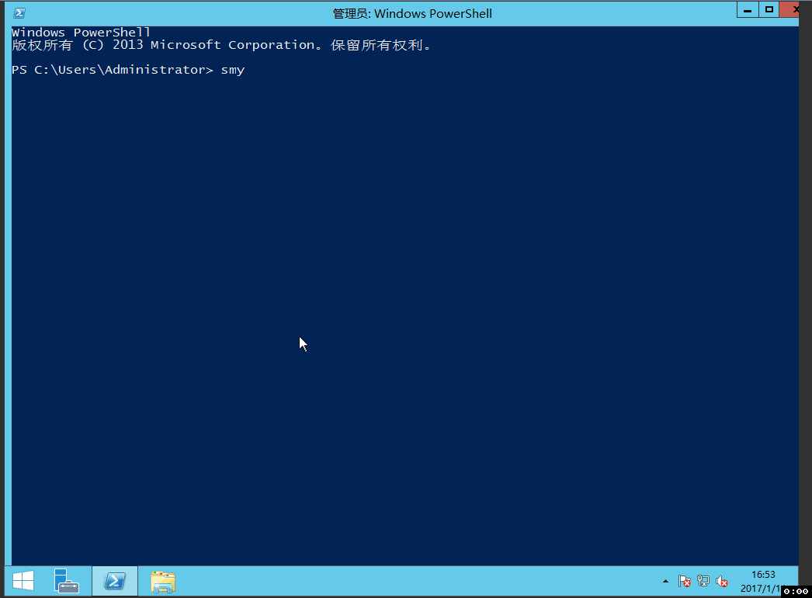
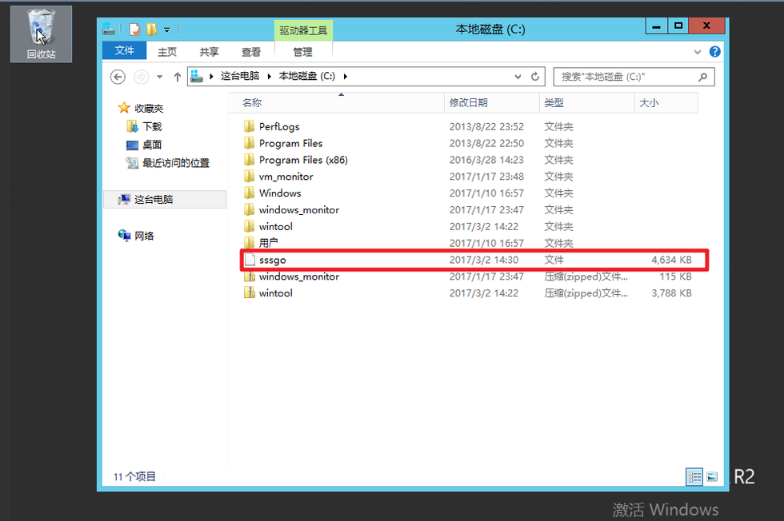

1.四大参数校验工具
cpu，内存，磁盘io，网络io。
部分参考了一下微软msdn的这篇文章Tools To Simulate CPU / Memory / Disk Load
####cpu
图形化工具 CPUSTRES.EXE
这个工具比较简单，直接选择用几个thread，选择一下priority和activity优先级，即可产生不同的压力。

命令行工具，consume.exe。
consume 使用方法：
1
2
3
4
5
6
7
8
9
|
consume RESOURCE [-time SECONDS]
RESOURCE can be one of the following:
-physical-memory
-page-file
-disk-space
-cpu-time
-kernel-pool
|
内存
内存加压工具：
testlimit.exe
1
|
Testlimit64.exe -d -c 2048
|
即占用2G内存。

磁盘io
直接参考使用 fio
注意ioengine 使用windowsaio
1
|
fio.exe --direct=1 --iodepth=1 --rw=randrw --rwmixread=70 --bs=16k --size=1g --ioengine=windowsaio --group_reporting --name=file --runtime=300 --time_based --numjobs=1 --thread --filename=bench
|
网络io
这个也可以使用和linux下相一致的 iperf
使用方式同linux。
server端
client端
1
|
iperf -u -c 223.252.223.153 -i 2 -b 40M -t 600
|
###2.穿透vnc快捷键映射
首先讲一下回归测试windows尽可能自动化，降低手工操作的思路：
1.尽可能把测试工具，测试环境准备好（例如关闭防火墙），然后打一个镜像，使用这个镜像进行测试。
2.但是因为需要在不同环境中进行回归，以及由于各种目的，需要测试一个纯净的镜像等需求（例如在基础镜像中进行了一些小的变更），导致未能满足要求1.
3.所以考虑将测试工具打成一个压缩包，上传到对象存储上去。
4.windows server2012使用浏览器下载十分繁琐，因为安全原因，需要很多鼠标点击操作关闭安全策略才能下载，正好调研发现powershell 自带一个curl，注意虽然和linux下curl不完全一样，但是能实现下载并保存为文件的需求。下文有描述通过 scurl键映射一键下载对应回归的工具包。
实现穿透vnc快捷键映射的动机：
1.windows不方便自动化。
2.远程操作涉及到许多gui交互。（关闭防火墙等）
3.vnc不能进行复制粘贴。
目标，把gui操作尽可能的cli化（利用powershell）。
例如：关闭防火墙
1.手工鼠标点击操作极其复杂
2.如果使用powershell
1
|
Set-NetFirewallProfile -Profile Domain,Public,Private -Enabled False
|
挂载云硬盘操作
1.鼠标点击操作极其复杂
2.如果使用powershell
1
|
Get-Disk | Where partitionstyle -eq 'raw' | Initialize-Disk -PartitionStyle MBR -PassThru | New-Partition -AssignDriveLetter -UseMaximumSize | Format-Volume -FileSystem NTFS -Confirm:$false
|
但是通过vnc，不能和宿主机进行复制黏贴，手输入那么大一串命令行不现实，而且容易出错。
需要做一个键映射，类似vim中的map。将一个较长的命令映射成一个较短的字符串。
考虑使用autohotkey实现。直接使用它的sendraw模块。将相关字符串已按键方式输出，正好输入到vnc中，进行操作。
一个autohotkey demo 脚本。之前使用f1-f10键作为映射键。考虑到相关命令日积月累越来越长，于是使用短命令来映射，我是用s作为leader key。
1
2
3
4
5
6
7
8
9
10
11
12
13
14
15
16
17
18
19
20
21
22
23
24
25
26
27
28
29
30
31
32
33
|
::scurl::
sendraw curl http://testnos1.nos-eastchina1.126.net/windows_tool.zip -OutFile wintool.zip
sleep 10
return
::sdt::
sendraw http://testnos1.nos-eastchina1.126.net/windows_tool.zip
return
::sfire::
sendraw Set-NetFirewallProfile -Profile Domain,Public,Private -Enabled False
return
;check MTU
::smtu::
sendraw netsh interface ipv4 show subinterfaces
return
::sfio::
sendraw fio.exe --direct=1 --iodepth=1 --rw=randrw --rwmixread=70 --bs=16k --size=1g --ioengine=windowsaio --group_reporting --name=file --runtime=300 --time_based --numjobs=1 --thread --filename=bench
return
::siperf::
sendraw iperf -u -c 223.252.223.153 -i 2 -b 40M -t 600
return
::svol::
sendraw Get-Disk | Where partitionstyle -eq 'raw' | Initialize-Disk -PartitionStyle MBR -PassThru | New-Partition -AssignDriveLetter -UseMaximumSize | Format-Volume -FileSystem NTFS -Confirm:$false
return
::sping::
sendraw ping 114.114.114.114
return
|
操作效果如下：

###3.ansible批量执行
如果需要批量进行多台windows云主机的测试，上述方法手工操作还是太多了，试想手工登录100台vnc然后进行某个操作，orz。
windows云主机的批量处理工具貌似没有linux那么丰富？调研发现某个博主这么说，然而我并没有chef相关经验，而且ansible貌似在windows部署方面也有所进展了。我调通了一个例子，能够实现一部分自动化。
凡是牵扯到工具选型的时候，如果你发现你处于一个非常纠结的地位，那可能是因为竞品工具没有一个能突出重围，导致你在它们各自的优缺点之间难以取舍。我也理解，工具选型要考虑的因素太多。这个项目的选型其实没经过太大波折，很快就决定使用Chef。原因我可以简单说一下，Puppet的API太不友好，ansible和salt对windows的支持程度未知，而根据我以前的经验，Chef对windows的支持还是比较成熟的。所以我们就快刀斩乱麻选择了Chef。
使用方式
ansible 分为server端和client端。这里client端即为被操作的windows云主机。而server端必须使用一台linux云主机，不支持windows!(囧)
server安装完ansible并进行配置之后
1
2
3
4
5
6
7
8
9
10
11
|
root@debian:/opt/ansible# vi hosts.ini
[windows]
59.111.122.255
[windows:vars]
ansible_ssh_user=Administrator
ansible_ssh_pass=mypassword
ansible_ssh_port=5986
ansible_connection=winrm
ansible_winrm_server_cert_validation=ignore
|
client
windows云主机设置
1. 关闭防火墙 Set-NetFirewallProfile -Profile Domain,Public,Private -Enabled False
2. 运行ConfigureRemotingForAnsible.ps1 这个文件
ad-hoc方式
1
2
3
4
5
|
root@debian-test-master:/opt/ansible# ansible windows -i hosts.ini -m win_ping
59.111.122.255 | SUCCESS => {
"changed": false,
"ping": "pong"
}
|
查看主机基本状况
1
2
3
4
5
6
7
8
9
10
11
12
13
14
15
16
17
18
19
|
root@debian-test-master:/opt/ansible# ansible windows -i hosts.ini -m setup
59.111.100.25 | SUCCESS => {
"ansible_facts": {
"ansible_distribution": "Microsoft Windows NT 6.3.9600.0",
"ansible_distribution_version": "6.3.9600.0",
"ansible_fqdn": "WIN-AQJ5DL6898A",
"ansible_hostname": "WIN-AQJ5DL6898A",
"ansible_ip_addresses": [
"10.173.32.16",
"fe80::617c:a9ee:f457:cc63",
"59.111.100.25",
"fe80::7d2a:e355:45c6:495f"
],
"ansible_os_family": "Windows",
"ansible_system": "Win32NT",
"ansible_totalmem": "4294967296"
},
"changed": false
}
|
使用play-book
1
2
3
4
5
6
7
8
9
10
11
12
|
root@debian-test-master:~/ansible-examples/windows# ansible-playbook -i hosts.ini ping.yml
PLAY [Ping] ********************************************************************
TASK [setup] *******************************************************************
ok: [59.111.100.25]
TASK [ping] ********************************************************************
ok: [59.111.100.25]
PLAY RECAP *********************************************************************
59.111.100.25 : ok=2 changed=0 unreachable=0 failed=0
|
传入文件
1
2
3
4
5
6
7
8
9
10
|
root@debian-test-master:~/ansible-examples/windows# ansible-playbook -i hosts.ini copy.yml
PLAY [copy file] ***************************************************************
TASK [copy file test] **********************************************************
changed: [59.111.100.25]
PLAY RECAP *********************************************************************
59.111.100.25 : ok=1 changed=1 unreachable=0 failed=0
|
其中copy.yml内容为
1
2
3
4
5
6
7
8
9
|
1 ---
2 - name: copy file
3 hosts: all
4 gather_facts: false
5 tasks:
6 - name: copy file test
7 win_copy:
8 src: /root/sssgo
9 dest: c:\sssgo
|
windows端可以看到，文件已传入根目录

删除文件
1
2
3
4
|
root@debian-test-master:~/ansible-examples/windows# ansible windows -m win_file -a 'path=c:\\sssgo state=absent'
59.111.122.255 | SUCCESS => {
"changed": true
}
|
即可看到文件被删除。
具体玩法和linux下的类似。这样即可以达到批量控制windows云主机的目的。后续一些繁琐的测试可以通过写ansible playbook 自动化起来。当然，最好能够在windows命令行下找到对应的cli工具，或者自己写脚本或者工具实现。:)